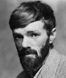

(1885 – 1930)

İngiliz romancı, şair, öykü yazarı, eleştirmen ve ressam D. H. Lawrence seks ve insan sezgilerini endüstri toplumunun insanı insanlıktan çıkaran yapısına karşı çözüm olarak görüyordu. Başta "Lady Chatterley'nin Âşığı" ve "Oğullar ve Sevgililer" adlı romanları olmak üzere, yapıtları kendi döneminde hep "müstehcenlik" suçlamasıyla karalanmaya çalışıldı.
Adı David Herbert Lawrence olan (okunuşu: Deyvid Örbırt Lovrıns) ama her zaman D. H. Lawrence adıyla bilinen 20. yüzyıl İngiliz romanının bu ünlü yazarı, 11 Eylül 1885'te Orta İngiltere'deki Nottinghamshire'da bulunan bir madenci kasabası olan Eastwood'da dünyaya geldi. Babası Arthur içkiye düşkün bir madenci, annesi Lydia ise emekli bir öğretmendi. Lawrence'ın çocukluğu anne-babası arasındaki bitmek bilmeyen tartışmalarla ve babasından ölesiye nefret ederek geçti. Genç David, annesinin yönlendirmesiyle sanat öğrenimi görmeye başladı ve burslu olarak okuduğu Nottingham Lisesi'ni bitirdi. Okuldan sonra tıp aletleri üreten bir firmada ofis memurluğu, sonra da dört yıl özel öğretmenlik yaptı.
Nottigham Üniversitesi'ni bitiren Lawrence, öğretmenlik belgesini 22 yaşında aldı ve 1908-11 yılları arasında öğretmenlik yapacağı Güney Londra'daki bir okulda işe başladı. Lawrence'ın annesi 1910 yılında öldü; üstelik aşırı dozda uyku hapı vererek annesinin ölümüne yardımcı olan, yazarın ta kendisiydi! Bu ölüm sahnesi sonraları yazarın başyapıtı Oğullar ve Sevgililer'de (1912) aynen anlatılmaktadır.
1912'te, yazarın ilk başyapıtı Oğullar ve Sevgililer yayımlandı. Yazarın çocukluğundan çok belirgin izler taşıyan romanda çocukluk sevgilisi Jessi Chambers'tan esinlenilmiş olan Miriam adında bir karakter de önemli yer tutuyordu. 1914 yılında Lawrence sevgilisi Frieda von Richthofen'la evlendi ve hayatının geri kalan yirmi yılının neredeyse tamamını seyahat ederek geçirdi. Karı-koca arasındaki aşk-nefret ilişkisi çok derin boyuttaydı ve sık sık birbirlerinin boğazına sarılacak şiddette kavgalar yaşanıyordu.
1911 yılında, Lawrence 25 yaşındayken ilk romanı Ak Tavuskuşu yayımlandı. Yazarın dördüncü romanı Gökkuşağı (1915) İngiltere'nin kuzeyinde yaşayan iki kız kardeşin yetişme yıllarını anlatıyordu. Karakterlerden Ursula ise Lawrence'ın ilk aşkı Louie Barrows'tan izler taşıyordu. Roman "açık saçık sözler kullanıldığı ve seksten söz ettiği" gerekçesiyle müstehcenlikle suçlanarak yasaklandı. Yazarın kadın-erkek ilişkilerini o zamanlar var olmayan bir samimiyetle anlatması, bazılarının hiç hoşuna gitmedi ve romanın 1000 tanesi yargıç huzurunda yakılarak yok edildi.
I. Dünya Savaşı boyunca Lawrence ve Frieda çok zor günler geçirdiler. Alman casusu olmak dahil binbir türlü nedenle suçlanan karı-koca memleketten ayrılmak istediklerinde ise "şüpheli" oldukları için pasaport verilmiyordu! Nihayet savaştan sonra, 1919 yılında pasaport aldılar ve gezi yılları başladı.
Lawrence 1920 yılında yayımlanan Kayıp Kız'ı İtalya'da, Gargano'dayken yazmaya başladı. 1920'lerde Aldous Huxley ile birlikte İtalya ve Fransa'ya yolculuklar yaptı. 1922-26 arasında ise yazar ve Frieda Seylan, Avustralya ve Meksika'ya gittiler. Bu yıllarda gördüğü yerler, Lawrence'ın birçok öyküsü ve romanında mekan olarak kullanıldı. 1924 yılında New York sosyetesinden bir kadın, Oğullar ve Sevgililer romanının özgün el yazmaları karşılığında Lawrence ve eşine New Mexico'da bir Kiowa çiftliği hediye etti.
D. H. Lawrence'ın başyapıtı Lady Chatterley'nin Âşığı'nın ilk baskısı, 1928 yılında Floransa'da yapıldı. Roman, zengin ve soylu bir kadın olan Constance Chatterley ile çiftliğinde işçilik yapan bir adam arasındaki aşkı anlatmaktadır. Roman pornografik bulunarak hem Britanya'da hem de ABD'de yasaklandı. Lady Chatterley'nin Âşığı'nın aklanıp Britanya'da sansürsüz yayımlanması, ancak 1960 yılında mümkün olabildi.
20. yüzyılın en önemli İngiliz romancılarından biri olan D. H. Lawrence 2 Mart 1930'da Fransa'nın Vence kentinde öldü. Ölümünden sonra eşi Frieda, sahibi oldukları Kiowa çiftliğinde küçük bir kilise yaptırdı ve kocasını oraya gömdürdü.
Seçme Yapıtları: Anka Kuşu (1911), Oğullar ve Sevgililer (1912 – Engin Yayınları, 1999), Gökkuşağı (1915), İtalya'da Alacakaranlık (1916), Âşık Kadınlar (1920 – Can Yayınları, 2009), Kayıp Kız (1920), Tilki (1923), Kanguru (1923), Tüylü Yılan (1926), Lady Chatterley'nin Sevgilisi (1928 – Yapı Kredi Yayınları, 2011)